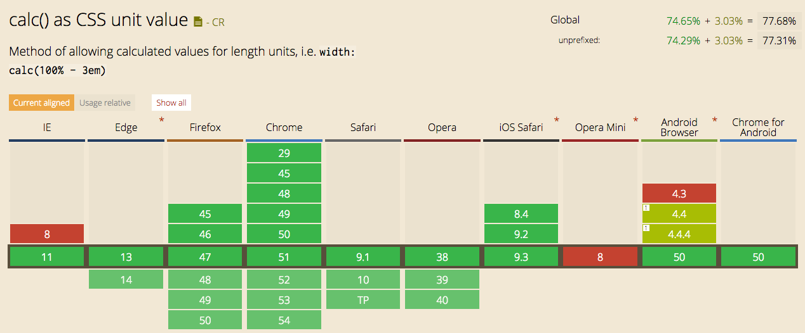
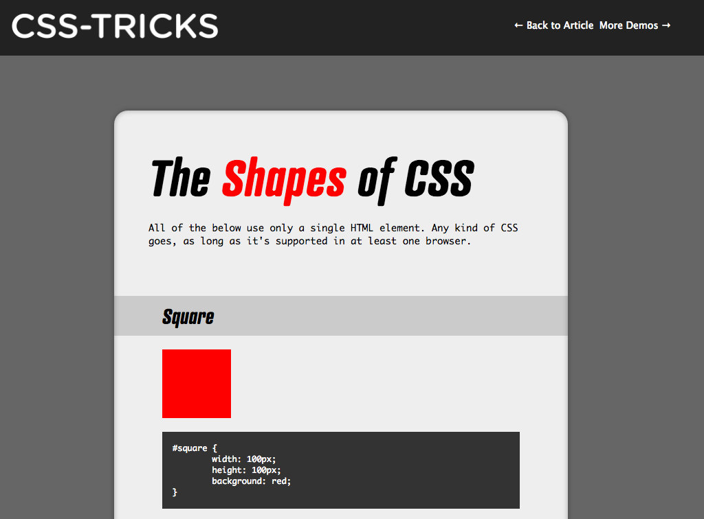
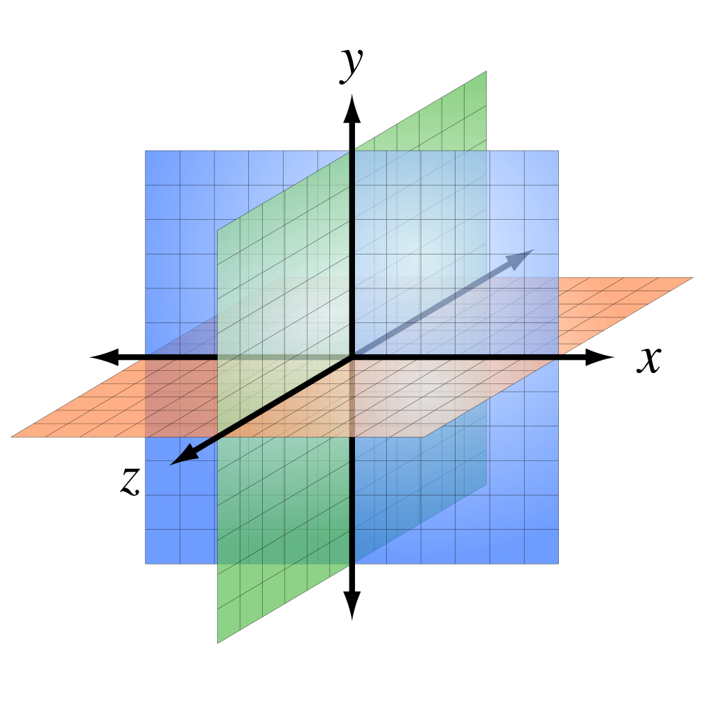
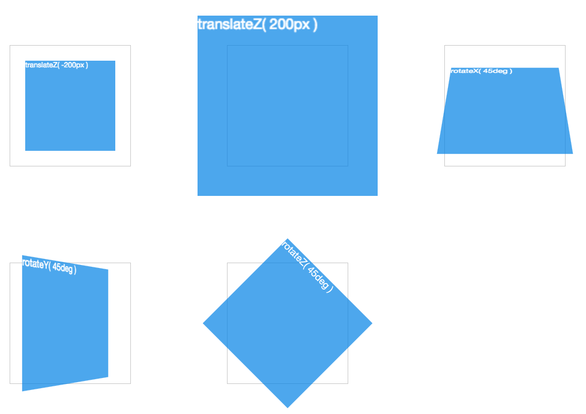

CSSMATH
As vezes eu escrevo...
willianjusten.com.brAlguns lugares que já trabalhei...

Quem aqui gosta de Matemática?
Não tem como
fugir =)
Matemática está em
tudo!
Matemática tem
diversas áreas
Aritmética
Parte da matemática que estuda as operações numéricas: soma, subtração, multiplicação, divisão etc.
Calc()
É um método que permite expressões matemáticas como adição (+), subtração (-), multiplicação (*) e divisão (/) dentro do CSS.
Compatibilidade
caniuse.com/#feat=calcVantagens do Calc
Podemos fazer operações com propriedades de unidades diferentes, como somar % com px.
#1 - Conteúdo com altura máxima
See the Pen Conteúdo com altura máxima by Willian Justen de Vasconcellos (@willianjusten) on CodePen.
#2 - Centralizando Verticalmente
See the Pen Vertical Align with Calc() by Willian Justen de Vasconcellos (@willianjusten) on CodePen.
#3 - Margens relativas ao tamanho da fonte
See the Pen Margens relativas ao tamanho da fonte by Willian Justen de Vasconcellos (@willianjusten) on CodePen.
#4 - Mais fácil leitura
.col-2 {
width: 16.66667%;
}
.col-2 {
width: calc((100% / 12) * 2);
}Criando um Grid com Calc
CodepenGeometria
É um ramo da matemática preocupado com questões de forma, tamanho e posição relativa de figuras e com as propriedades do espaço.
Formas e Tamanho
Plano Cartesiano
Transforms
#1 - Flip Card
See the Pen Flip com transform by Willian Justen de Vasconcellos (@willianjusten) on CodePen.
#2 - Scale Hover
See the Pen Scale Hover by Willian Justen de Vasconcellos (@willianjusten) on CodePen.
#3 - Divisor em Diagonal
See the Pen Divisor em Diagonal by Willian Justen de Vasconcellos (@willianjusten) on CodePen.
Quer mais?
See the Pen Explode rhombic dodecahedron into its first stellation (pure CSS) by Ana Tudor (@thebabydino) on CodePen.
Ana-Maria Tudor